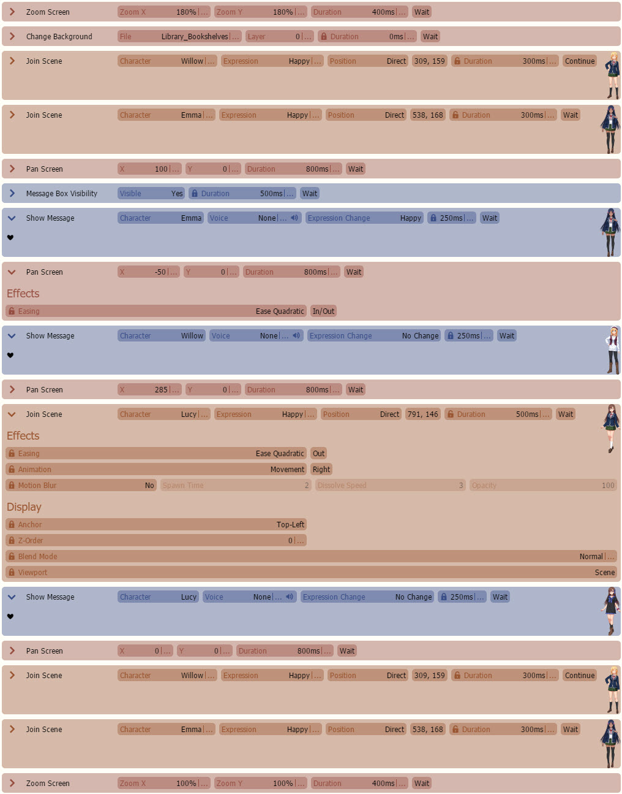

相机教程
相机教程I
n this tutorial, we are going to teach you some Screen, also known as Camera, effects that you can use to bring life to your Visual Novel. Here is an example scene to showcase how you can utilize these features!
实现
In the example we have shown, there's at least two things we wanted to do:
1. Pan the Screen to whoever is talking.
2. Pan the Screen to an area of the background to reveal a third character.You can find all the commands underScreen.

commands. The X and Y fields are basically adding offsets to your current X/Y position.